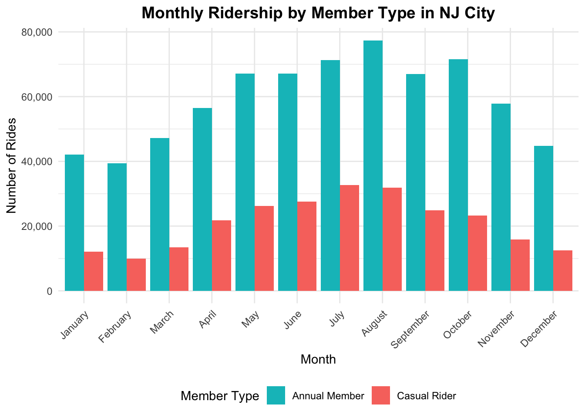
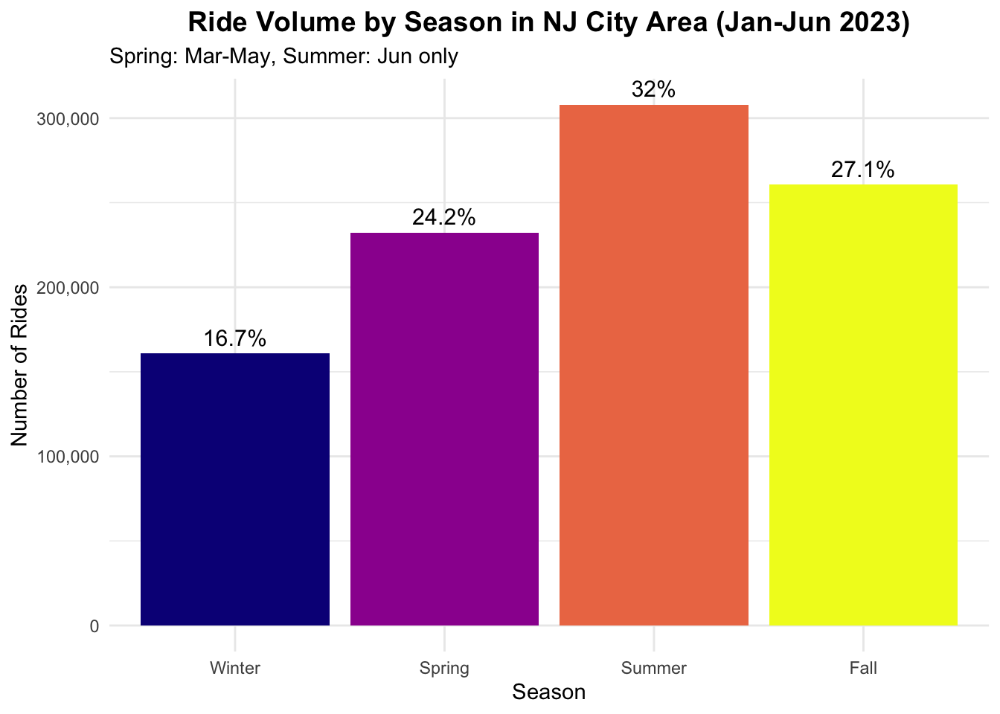
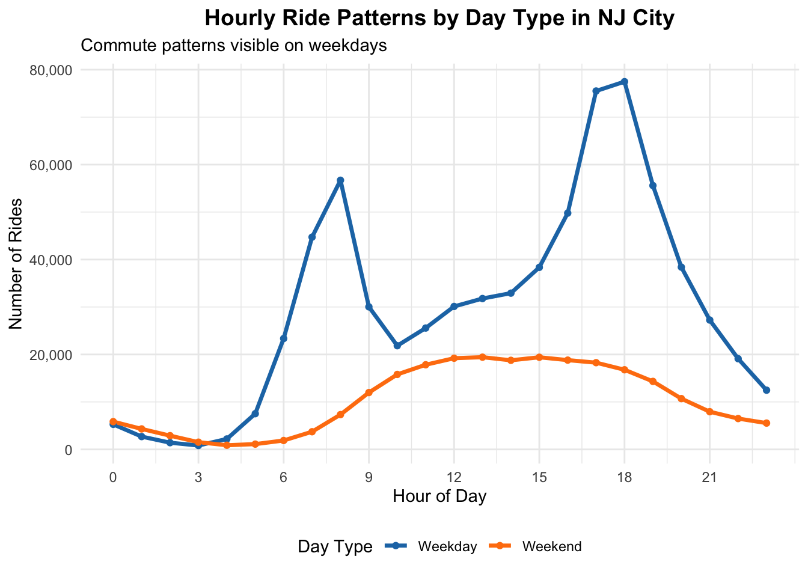
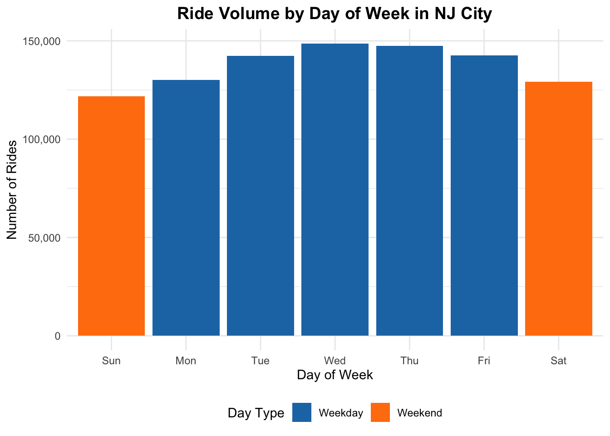
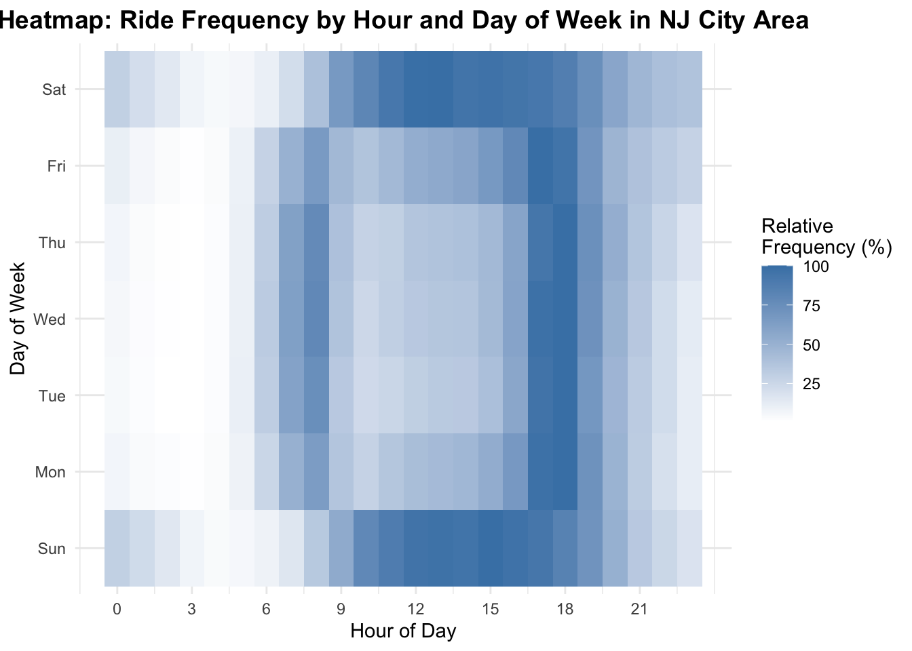
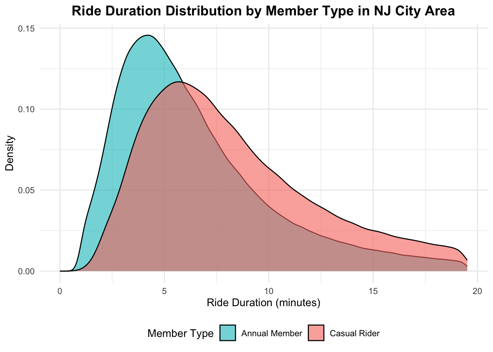
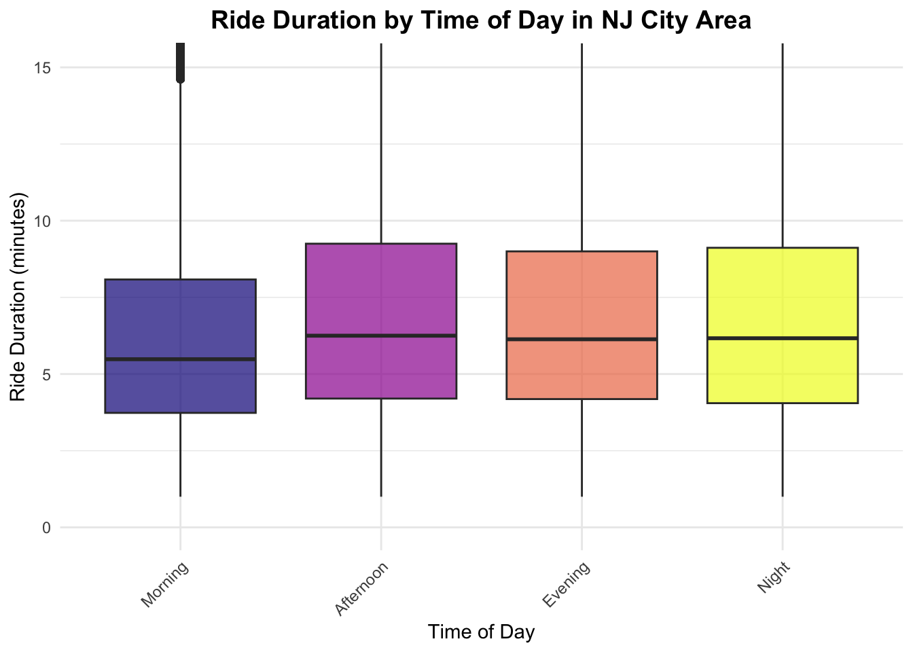
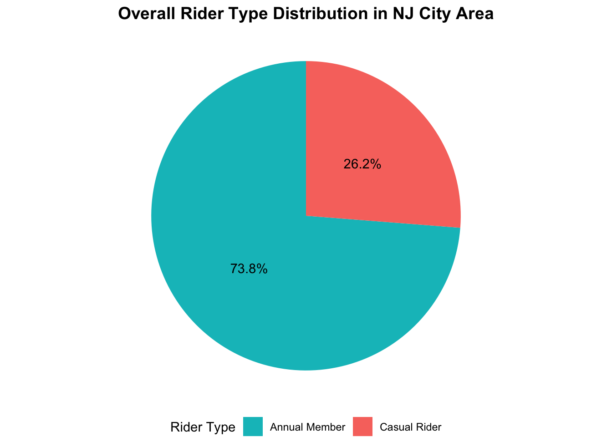
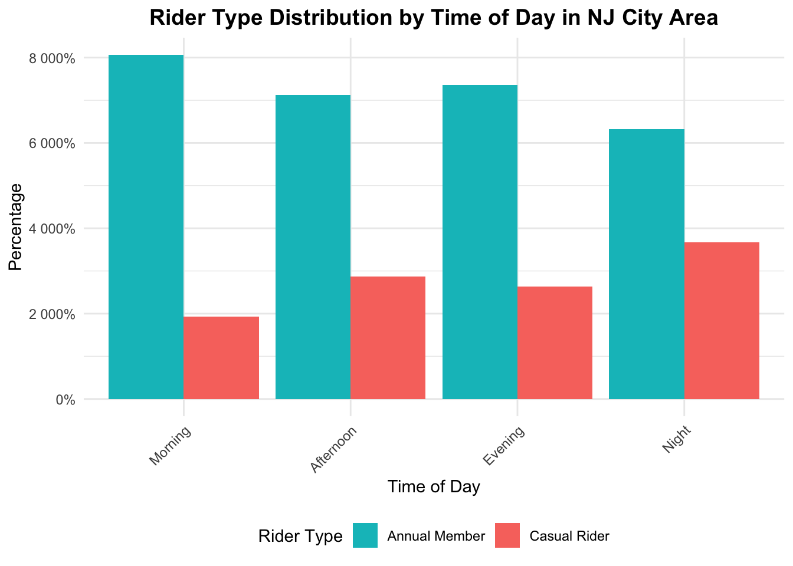

Final Report
Motivation
Citi bikes plays a major role in sustainable transportation across New Jersey (NJ). As renewable and sustainable technologies become more prominent with the worsening climate crisis, green transportation methods like citi bikes will become increasingly important. Understanding when, where, and how riders use citi bikes can provide valuable insights into commuter behavior, infrastructure needs, and seasonal ridership trends. Our goal is to uncover meaningful patterns in trip frequency, duration, and geography that can help inform future improvements in the city’s bike-sharing system and offer recommendations on growing citi bike ridership.
Research has shown that even the natural environment and greenspace have been shown to impact bike sharing utilization in urban areas (Gong et al, 2024). Looking at how ridership trends are impacted by season, by rider type (member vs casual), and usage trends can add to the growing research on bike-sharing, a field which has only continued to expand in the years since it was first introduced to consumers.
Initial Questions
At the beginning of our project, we had planned to look at bike sharing data from New York City, with a particular focus on the differences between bike usage between boroughs. However, as we began cleaning and analyzing the data, we realized that our data actually was drawn from Jersey City. As a result, our questions naturally began to shift. Additionally, due to the anonymous nature of the data collected, we were unable to track specific journeys, which did reduce our ability to examine our research question related to ride duration.
Research Questions
- How do usage patterns differ between annual members and casual riders?
- What temporal patterns exist in bike-sharing usage?
- Which stations and routes are most popular?
- How does bike type preference vary across user groups?
- What factors influence ride duration?
Data
Sources
We located and downloaded the publicly available Citi Bike Trip History Data via the Citi Bike System Data portal. This data is provided under the program’s data-use policy to enable developers, researchers, artists, and the public to analyze citi bike behavior. The historical trip data is updated daily and includes information for each ride including ride ID, type of rideable, start and end latitude/longitude, user type, etc.
We downloaded the JC Citi Bike Trip dataset for the 2023 calender year, corresponding to 12 files dated 202301 through 202312.
Cleaning
The 12 monthly files are .csv files, so they were imported with
read_csv. We encoded the data with the variable classes
outlined by the Citi Bike data structure (e.g. ride_id
variable was coded as a character instead of numeric). Then .csv files
were merged into one dataset. Also, variable names were cleaned with
janitor::clean_names. The initial dataset had 988851
observations and 14 variables.
Then we reformatted and created new variables in our dataset for
later analysis. We added the ride_length_min variable by
subtracting the ended_at and started_at
variables for each ride. Then we added the time_of_day
variable and assigned a time of day category (i.e. Morning, Afternoon,
Evening, or Night) based on the start_hour variable for
each observation. We also added the day_type variable and
assigned the type of day category (i.e. Weekday or Weekend) based on the
start_day variable for each observation. The
rideable_type variable was renamed to a clearer variable
called bike type and names under this field were
standardized into clearer categories (e.g. electric_bike renamed to
Electric). We added the season variable and assigned a
season category (i.e. Winter, Spring, Summer, or Fall) based on the
start_month variable for each observation. Then we added
the ride_length_category variable and assigned a ride
length category based on the ride_length_min variable for
each observation (e.g. ride_length_min less than 10 mins
was classified as “Short (<10 min)”). Lastly, we added the
nj_area variable and assigned a New Jersey area category
based on longitudinal value (e.g. nj_area is “Jersey City”
for areas where the longitude less than 74.03).
We converted character variables (e.g. member_type) to
factor where appropriate with ordering in mind. Also, all date and time
variables were changed to standard data and time formatting.
Unnecessary data or problematic trips were filtered out such as rides shorter than one minute, rides lasting more than 24 hours, trips where the end time precedes the start time, and very short rides that began and ended at the same station.
The new and reformatted dataset has 961796 observations and 28 variables.
Although we did not use all the variables in this dataset, we selected multiple key variables to investigate our research questions:
ride_length_min: Total amount of time of citi bike ride
in minutes, categorized into 4 time intervals (e.g., Short (<10 min),
Medium (10–30 min), Long (30–60 min), and Very Long (>60 min)).
rideable_type: Type of bike categorized as electric bike
or classic bike
day_type: Weekday or Weekend
day_of_week: Day of the week in which duration of citi
bike ride trip occurred
season: Winter, Spring, Summer, Fall
member_type: Citi bike member status categorized as
annual member or casual rider
start_month: Calender month in which start of citi bike
ride trip occurred
start_hour: Hour of the day in which start of citi bike
ride trip occurred
time_of_day: Time of the day categorized as morning,
afternoon, or evening
To view more details about our data sources go to the Data tab.
Exploratory Data Analysis
Overall, we wanted conduct a series of statistical analyses to quantify how member type, day of the week, and seasonal factors influence riding behavior. This step aimed to identify potential patterns and relationships in NJ citi bike usage, providing a foundation for subsequent analyses. In our exploratory data analysis (EDA), we examined ridership in New Jersey City by monthly and seasonal patterns, by temporal patterns, by user type, and patterns in ride duration.
Analysis 1: Monthly and seasonal patterns in New Jersey City
| start_month | n_rides | percentage | avg_duration |
|---|---|---|---|
| January | 54205 | 5.6 | 10.4 |
| February | 49315 | 5.1 | 9.2 |
| March | 60674 | 6.3 | 9.6 |
| April | 78280 | 8.1 | 11.6 |
| May | 93363 | 9.7 | 12.9 |
| June | 94671 | 9.8 | 12.6 |
| July | 104012 | 10.8 | 12.6 |
| August | 109316 | 11.4 | 11.6 |
| September | 91979 | 9.6 | 11.1 |
| October | 94921 | 9.9 | 10.9 |
| November | 73811 | 7.7 | 9.3 |
| December | 57249 | 6.0 | 8.8 |

The NJ Citi Bike 2023 data shows ridership peaking in July and August with over 100,000 rides each, while winter months have the lowest numbers. Average ride durations are longest in late spring and summer, around 12-13 minutes, and shortest in winter. Overall, bike usage rises in warmer months and falls as temperatures drop.

The monthly ridership in the NJ city shows that annual members consistently take more rides than casual riders throughout the year. Both groups see an increase in rides during the warmer months, peaking in July and August, before declining in the colder months. Annual members have a sharper rise and higher overall ridership compared to casual riders.
| season | n_rides | avg_duration | total_hours | percentage |
|---|---|---|---|---|
| Winter | 160769 | 9.5 | 25376.7 | 16.7 |
| Spring | 232317 | 11.6 | 44844.9 | 24.2 |
| Summer | 307999 | 12.2 | 62824.5 | 32.0 |
| Fall | 260711 | 10.5 | 45751.2 | 27.1 |

The NJ City sees the highest ride volume in summer, accounting for 32% of rides with an average duration of 12.2 minutes. The fall season follows with 27.1% of rides, then spring at 24.2%, which both having longer average durations than winter. Winter has the lowest ride count at 16.7%, with the shortest average ride duration of 9.5 minutes. Overall, ride frequency and duration peak in warmer seasons.
Analysis 2: Temporal patterns in NJ City
| start_hour | day_type | n_rides | avg_duration |
|---|---|---|---|
| 18 | Weekday | 77476 | 10.4 |
| 17 | Weekday | 75508 | 10.3 |
| 8 | Weekday | 56707 | 8.6 |
| 13 | Weekend | 19430 | 14.9 |
| 15 | Weekend | 19413 | 16.2 |
| 12 | Weekend | 19215 | 13.7 |

Weekday ridership displays distinct peaks, with a rise in ridership in the morning between 8–9 AM and a rise in ridership in the late afternoon between 4-6 PM. In contrast, weekend rides follow a smoother, flatter curve. Overall, weekday rides are substantially higher, reflecting typical workday travel behavior, while weekend activity is steadier and more leisure oriented.
| day_of_week | day_type | n_rides | avg_duration | percentage |
|---|---|---|---|---|
| Sun | Weekend | 121742 | 14.7 | 12.7 |
| Mon | Weekday | 130039 | 10.5 | 13.5 |
| Tue | Weekday | 142311 | 10.1 | 14.8 |
| Wed | Weekday | 148602 | 9.8 | 15.5 |
| Thu | Weekday | 147393 | 9.9 | 15.3 |
| Fri | Weekday | 142610 | 10.5 | 14.8 |
| Sat | Weekend | 129099 | 13.4 | 13.4 |

Ride volumes steadily rise from Monday and peak midweek on Wednesday and Thursday before decreasing slightly on Friday. Weekends show lower total rides but longer ride duration, suggesting possibly more leisure based trips compared to weekday commuting patterns.

The heatmap highlights strong weekday commuting patterns, with ride activity concentrated in the morning and especially in the late afternoon and early evening. Weekends show a more even distribution across midday hours, with fewer early morning rides and a less concentrated in the afternoon.
Analysis 3: Ride duration analysis in NJ city
| n_rides | mean_duration | median_duration | sd_duration | q25 | q75 |
|---|---|---|---|---|---|
| 872183 | 6.9 | 6 | 3.9 | 4 | 8.8 |

Ride durations are short overall, clustering around 4–8 minutes, with a median of 6 minutes and a long tail of less frequent longer trips. The distribution is right-skewed, indicating that while most rides are brief, a smaller share extend well beyond the mean duration of about 7 minutes.
| member_type | n_rides | mean_duration | median_duration | sd_duration |
|---|---|---|---|---|
| Annual Member | 666521 | 6.5 | 5.6 | 3.7 |
| Casual Rider | 205662 | 8.3 | 7.4 | 4.0 |

Annual members tend to take shorter, more consistent rides, while casual riders have noticeably longer trip durations on average.
| time_of_day | mean_duration | n_rides |
|---|---|---|
| Morning | 6.4 | 252192 |
| Afternoon | 7.2 | 246779 |
| Evening | 7.0 | 278330 |
| Night | 7.1 | 94882 |

Ride durations vary slightly by time of day. Mornings are the shortest on average, while afternoons, evenings, and nights are slightly longer and have more variable trips. The overall pattern suggests that rides later in the day tend to be more leisurely or flexible compared to morning travel.
Analysis 4: User type comparisons in NJ city
| member_type | n | percentage |
|---|---|---|
| Annual Member | 709452 | 73.8 |
| Casual Rider | 252344 | 26.2 |

Annual members make up the majority while casual riders account for a smaller share of bike usage.
| day_type | member_type | n_rides | avg_duration | total | percentage |
|---|---|---|---|---|---|
| Weekday | Annual Member | 548686 | 8.5 | 710955 | 77.2 |
| Weekday | Casual Rider | 162269 | 15.8 | 710955 | 22.8 |
| Weekend | Annual Member | 160766 | 10.2 | 250841 | 64.1 |
| Weekend | Casual Rider | 90075 | 20.7 | 250841 | 35.9 |


The data shows that annual members make up the majority of weekday riding, accounting for over three-quarters of trips, while casual riders make up a larger share on weekends. By time of day, annual members remain the majority in every time period, specifically their share is the highest in the morning when commuting is most common. However, annual member rides decline slightly later in the day as casual usage increases. Overall, the patterns reinforce that members drive weekday, commute oriented demand, while casual riders contribute more heavily during leisure times and weekends.
| member_type | bike_type | n_rides | total | percentage |
|---|---|---|---|---|
| Annual Member | Classic | 627042 | 709452 | 88.4 |
| Annual Member | Electric | 82410 | 709452 | 11.6 |
| Casual Rider | Classic | 205515 | 252344 | 81.4 |
| Casual Rider | Electric | 44741 | 252344 | 17.7 |
| Casual Rider | Docked | 2088 | 252344 | 0.8 |

The graph compares the distribution of bike types (classic, electric, and docked—used) by annual members compared to casual riders. Both groups mostly use classic bikes, but members use electric bikes slightly less often than casual riders. Casual riders also show a small amount of docked-bike usage, while members almost never use them.
Statistical Analyses
In this data analysis, we test to see if there is evidence to conclude an association between member type, day of week, or season and riding behavior. First, a t-test comparing ride duration by member type revealed that casual riders take significantly longer trips than annual members, with an average difference of 8.68 minutes and a highly significant p-value (< 0.001, 95% CI: 8.49–8.87 minutes). Next, a chi-square test evaluated the relationship between member type and day type, showing a strong association (X² = 16,403.81, df = 1, p < 0.001), indicating that casual riders are disproportionately active on weekends compared to annual members. Finally, an ANOVA examined ride duration across seasons and found significant differences (F = 1,189, df = 3, p < 0.001), demonstrating that rides tend to be longer or shorter depending on the season.
Is there a statistically significant difference in average ride duration between annual members and casual riders?
A Two-Sample T-test was conducted to investigate the association between citi bike member type and the time in ride duration, aiming to determine whether member types have statistically different ride durations. We hypothesized that ride duration would statistically differ between annual members and casual members.
#T-test: Difference in ride duration between member types
casual_duration <- citibike_nj_analysis %>%
filter(member_casual == "casual") %>%
pull(ride_length_min)
member_duration <- citibike_nj_analysis %>%
filter(member_casual == "member") %>%
pull(ride_length_min)
ttest_result <- t.test(casual_duration, member_duration, var.equal = FALSE)
cat(sprintf(" t = %.2f\n", ttest_result$statistic))## t = 88.63cat(sprintf(" p-value = %s\n",
ifelse(ttest_result$p.value < 0.001,
"< 0.001",
sprintf("%.4f", ttest_result$p.value))))## p-value = < 0.001cat(sprintf(" Mean difference: %.2f minutes\n",
mean(casual_duration) - mean(member_duration)))## Mean difference: 8.68 minutescat(sprintf(" 95%% CI: [%.2f, %.2f]\n",
ttest_result$conf.int[1], ttest_result$conf.int[2]))## 95% CI: [8.49, 8.87]The t-test indicates a highly significant difference in ride duration between annual members and casual riders (p < 0.001). Casual riders consistently take longer trips, averaging 8.68 minutes more than members. The narrow 95% confidence interval (8.49–8.87 minutes) reinforces the reliability of this gap, suggesting a clear behavioral distinction: members use bikes for short, work-related trips, while casual riders tend toward longer, more leisure-oriented rides.
Is there an association between a rider’s membership type and whether they ride on a weekday or weekend?
A Chi-Square test of independence was conducted to investigate the association between member type and the day of the week, aiming to determine whether the member type of an individual’s citi bike membership was independent of the day an individual uses the bike. We hypothesized that there would be a strong association between member type and day of week.
# Chi-square test: Association between member type and day type
member_day_table <- citibike_nj_analysis %>%
count(member_casual, day_type) %>%
pivot_wider(names_from = member_casual, values_from = n, values_fill = 0) %>%
column_to_rownames("day_type")
chisq_test <- chisq.test(as.matrix(member_day_table))
cat(sprintf(" X-squared = %.2f\n", chisq_test$statistic))## X-squared = 16403.81cat(sprintf(" p-value = %s\n",
ifelse(chisq_test$p.value < 0.001,
"< 0.001",
sprintf("%.4f", chisq_test$p.value))))## p-value = < 0.001The chi-square test identifies a strong and statistically significant association between membership type and day type (weekday vs. weekend), with a large test statistic (X² = 16,403.81, df = 1, p < 0.001). This means the distribution of rides across weekdays and weekends differs meaningfully by rider type. Casual riders are far more active on weekends, whereas annual members dominate weekday usage, supporting the idea that members use the system for routine commuting, while casual riders use it for recreational or occasional trips.
Does average ride duration differ significantly across the four seasons?
A ANOVA test was conducted to investigate the association between season and ride time duration, aiming to determine whether average ride time duration varies across different types of seasons. We hypothesized that ride duration would statistically differ across season groups.
# ANOVA: Ride duration across seasons
season_anova_data <- citibike_nj_analysis %>%
filter(ride_length_min <= outlier_bounds$upper)
season_anova <- aov(ride_length_min ~ season, data = season_anova_data)
season_anova_summary <- summary(season_anova)
print(season_anova_summary)## Df Sum Sq Mean Sq F value Pr(>F)
## season 3 52686 17562 1189 <2e-16 ***
## Residuals 872179 12883626 15
## ---
## Signif. codes: 0 '***' 0.001 '**' 0.01 '*' 0.05 '.' 0.1 ' ' 1The ANOVA results show that ride duration varies significantly by season (F = 1,189, df = 3, p < 0.001). This means not all seasons have the same average ride length—seasonal conditions likely influence how long riders choose to stay on the bikes. These differences may reflect weather patterns, tourism cycles, or seasonal variations in recreational activity, all of which appear to meaningfully affect riding behavior.
Discussion
Our analysis revealed stark contrast between member and casual user types. Annual members often used Citi Bikes for shorter durations with peak usage during commuting hours (8-9 AM, 5-6 PM) during the weekdays and a consistent usage drop on the weekends. Overall, these rides were shorter, point-to-point trips with strong preferences for transit hub stations. Casual riders had a much longer ride duration (97% longer) with peak usage during midday and afternoons. Weekends also tended to be more popular for casual riders compared to weekdays. These riders showed preference for longer, more exploratory trips with higher usage of waterfront and tourist-friendly locations.
While member and casual users varied in ride durations, peak hourly usage, and preferred day types, they shared similarities in their seasonal trends and bike type preference. Overall, summer (June-August) was the most popular season for both user types, member and casual. While there was still moderate usage in both fall and spring, winter saw the least amount of Citi Bike utilization, with only core members using it. Additionally, both casual and member riders showed strong preference for classic bikes over e-bikes (despite wide e-bike availability).
The 2023 Citi Bike usage data for the NJ city reveals a commuter-focused bike-sharing system with strong performance and clear usage patterns. Annual members drive the majority of usage with short trips concentrated around transit hubs and during traditional commuting hours. Casual riders, while representing a smaller portion of total usage, demonstrate distinct recreational patterns with longer trips and weekend preferences.
The system successfully serves its dual purpose as both a transportation solution and recreational amenity. The concentration of usage at key transit stations like Grove St PATH and Hoboken Terminal demonstrates effective infrastructure placement and strong integration with the broader transportation network.
Key findings
The NJ Citi Bike system functions primarily as a commuter service, reflected in the fact that 74% of all rides are taken by annual members and that usage peaks during typical weekday commuting hours. These annual members generally take short, efficiency-focused trips, averaging 8.9 minutes, while casual riders exhibit a different pattern altogether, favoring longer, more leisurely weekend rides that average 17.6 minutes. Ridership also varies significantly with weather: summer produces roughly twice as many trips as winter, and ride duration tend to increase during warmer months. Even with electric bikes available, classic bikes overwhelmingly dominate system usage, accounting for 86.6% of all rides.
Limitations
This analysis is subject to several limitations that limit the depth and precision of the insights. The absence of weather data reduces the accuracy of seasonal trend assessments and missing end-station information for approximately 3,300 rides (0.3% of the dataset) may affect route based analyses. The anonymized nature of the data prevents tracking individual user journeys or behavior patterns, and demographic information is limited to membership type. Furthermore, the analysis is confined to 2023 data, limiting year-over-year comparisons. External factors, such as special events or construction, are also not captured, which may influence observed patterns.
Recommendations
- Expanding e-bike adoption through targeted incentives
- Optimizing seasonal operations to maintain engagement year-round
- Converting frequent casual riders to annual memberships
- Enhancing station capacity at high-traffic locations
As bike-sharing continues to evolve as a critical component of urban transportation, the NJ city Citi Bike system demonstrates the viability and value of such programs in suburban transit-oriented communities. Continued data-driven optimization will ensure the system meets growing demand while maintaining operational efficiency.